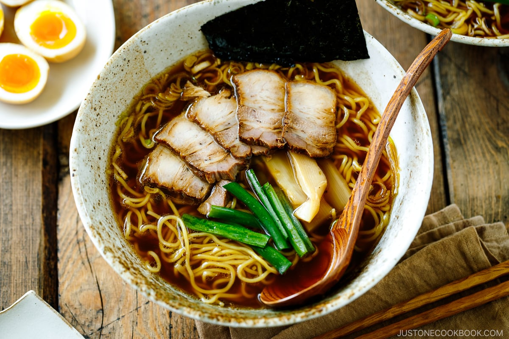

Tokyo Ramen (also known as Shoyu Ramen)

Ingredients
-
For Dashi (Japanese Stock)
- 8 cups water
- 20g kombu (dried kelp)
- 20g katsuobushi (dried bonito flakes)
-
For Chashu (Braised Pork)
- 800g pork belly
- 1 cup soy sauce
- 1 cup mirin
- 1 cup sake
- 1 cup water
- 1/2 cup sugar
-
For Nitamago (Marinated Soft-Boiled Eggs):
- 4 eggs
- 1/2 cup soy sauce
- 1/2 cup mirin
- 1/2 cup water
-
For Ramen Assembly
- 4 packs of ramen noodles (about 400g)
- 4 tablespoons soy sauce
- 2 tablespoons mirin (sweet rice wine)
- 2 tablespoons sake (Japanese rice wine)
- 2 tablespoons vegetable oil
- 4 cloves of garlic, minced
- 1 tablespoon grated ginger
- 4 green onions, sliced
- 4 sheets of nori (seaweed), cut into small squares
- Salt and pepper to taste
Instructions
-
Prepare the Dashi (Japanese Stock):
-
In a pot, combine 8 cups of water and 20g of kombu (dried kelp). Let
it sit for about 30 minutes to allow the flavors to infuse.
-
Slowly heat the pot over low heat, and just before the water starts
to boil, remove the kombu.
Do not let the water boil with the kombu as it can result in a
bitter taste.
-
Add 20g of katsuobushi (dried bonito flakes) to the pot.
Simmer for 1-2 minutes, then strain the liquid to remove the bonito
flakes. This liquid is your dashi. Set it aside.
-
Alternatively, you can also follow our Dashi Recipe
here
-
Prepare the Chashu (Braised Pork)
-
Place 800g of pork belly in a large pot and fill it with enough
water to cover the meat.
Bring it to a boil and cook for 3-4 minutes to remove any
impurities. Drain and rinse the pork belly.
-
In the same pot, combine 1 cup soy sauce, 1 cup mirin, 1 cup sake, 1
cup water, and 1/2 cup sugar.
Stir well to dissolve the sugar.
-
Add the pork belly back into the pot and bring the mixture to a
boil.
-
Reduce the heat to low, cover the pot, and let it simmer for about
1.5 to 2 hours until the pork is tender.
Occasionally turn the pork belly to ensure even cooking.
-
Once the pork is tender, remove it from the pot and let it cool.
Slice the chashu into thin pieces and set it aside.
-
Alternatively, you can also follow our Chashu Recipe
here
-
Prepare the Nitamago (Marinated Soft-Boiled Eggs)
-
In a pot, bring water to a boil and gently place 4 eggs into the
boiling water.
Cook for 6-7 minutes for a soft-boiled consistency.
-
While the eggs are cooking, prepare an ice bath.
Once the eggs are done, transfer them to the ice bath to cool down.
-
In a bowl, mix 1/2 cup soy sauce, 1/2 cup mirin, and 1/2 cup water.
Gently peel the cooled eggs and place them in the marinade.
Let them marinate for at least 1 hour or overnight for more flavor.
-
Alternatively, you can also follow our Nitamago Recipe
here
-
Ramen Assembly
-
Cook the ramen noodles according to the package instructions. Drain
and set aside.
-
In a large pot, heat 2 tablespoons of vegetable oil over medium
heat.
Add the minced garlic and grated ginger, and sauté for about 1
minute until fragrant.
-
Pour in the prepared dashi or broth, 4 tablespoons of soy sauce, 2
tablespoons of mirin, and 2 tablespoons of sake.
Bring the broth to a boil, then reduce the heat and let it simmer
for about 15-20 minutes to allow the flavors to meld together.
Season with salt and pepper to taste.
-
While the broth simmers, assemble the bowls by dividing the cooked
ramen noodles into individual serving bowls.
-
Ladle the hot broth over the noodles, making sure to distribute it
evenly.
-
Arrange the sliced chashu, green onions, nori squares, and nitamago
on top of the noodles.
- Serve the Tokyo Ramen immediately while hot.
Specificity
Tokyo Ramen is a popular style of ramen originating from Tokyo, Japan.
It is characterized by a clear soy sauce-based broth, thin and straight
noodles, and various toppings such as chashu (braised pork), green onions,
and nori (seaweed).
back to home